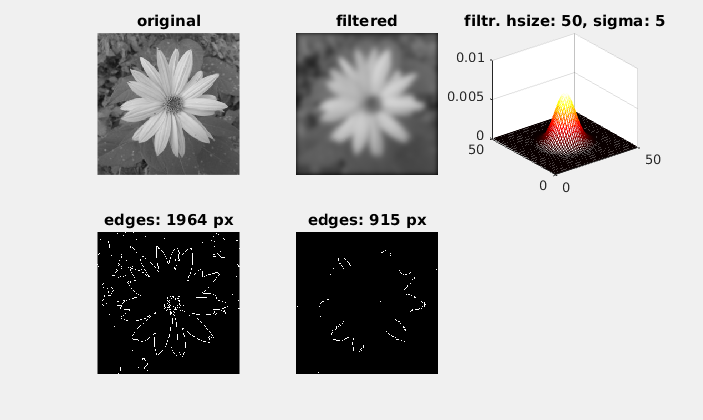

This document works with an image in
Avariable and a video invvariable.
{kind=link}
Detect image sharpness -> use edges to compare sharpness of 2 images
A = imread('kytka256.jpg');
A = rgb2gray(A);
% create blurred image
% If you have MATLAB2015a or newer, use imgaussfilt(A, sigma) instead of fspecial() and imfilter().
hsize = 50;
sigma = 5;
f = fspecial('gaussian',hsize,sigma);
Af = imfilter(A,f);
Ae =edge(A);
Aef =edge(Af);
s = 1;
cols = 3;
rows = 2;
Plotting the results
subplot(rows,cols,s);s=s+1;imshow(A);title('original');
subplot(rows,cols,s);s=s+1;imshow(Af);title('filtered');
subplot(rows,cols,s);s=s+1;mesh(f);title(['filtr. hsize: ' num2str(hsize),', sigma: ' num2str(sigma)]);
colormap('hot')
subplot(rows,cols,s);s=s+1;imshow(Ae);title(['edges: ', num2str(sum(Ae(:))), ' px' ]);
subplot(rows,cols,s);s=s+1;imshow(Aef);title(['edges: ', num2str(sum(Aef(:))), ' px' ]);

Autofocus – finding sharpest frames of a video
v = VideoReader('podzimni_kvetena_focus_test.mp4');
vHeight = v.Height;
vWidth = v.Width;
Determining the standard deviation of the middle quarter
centerX = [vHeight/4:vHeight*3/4];
centerY = [vWidth/4:vWidth*3/4];
Struct to load each frame
s = struct('frame',zeros(vHeight,vWidth,3,'uint8'));
k = 1;
A = [];
while hasFrame(v)
f = readFrame(v);
% saving frame
s(k).frame = f;
% sum of standard deviations in a frame cutout
A = [A sum(sum(std(double(f(centerX,centerY)))))];
k = k+1;
end
[m,i] = max(A);
D = ['Sharpest one probably: ',num2str(i),'. snimek.'];
disp(D)
Sharpest frame display
imshow(s(i).frame);
Write results
w = VideoWriter('autofocus');
open(w);
% the video goes a little bit past sharpest frame
for k = 1:i+10
writeVideo(w, s(k).frame)
end
% then returns
for k = 1:9
writeVideo(w, s(i+10-k).frame);
end
% and stays a while
for k = 1:9
writeVideo(w, s(i).frame);
end
close(w);